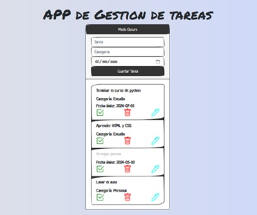
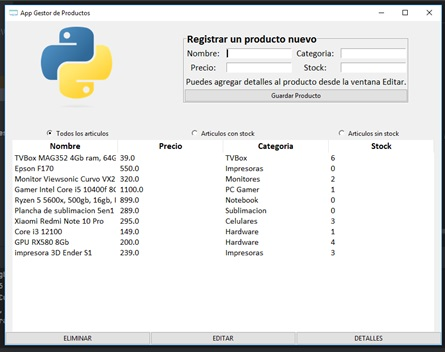
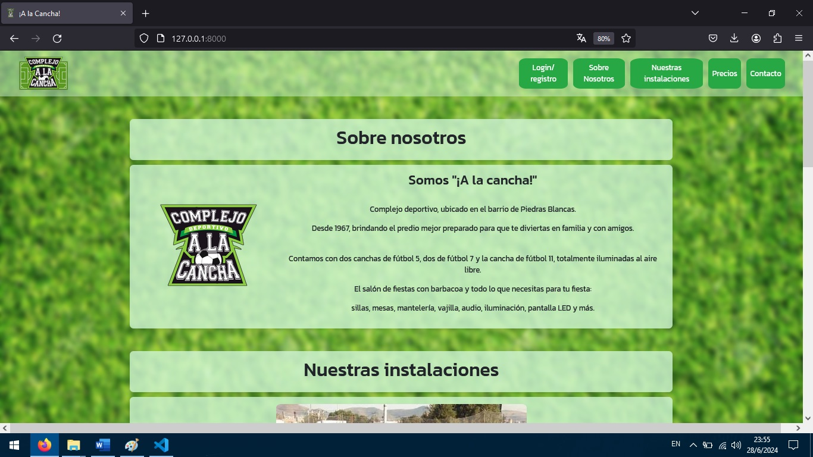

Especialista en Python - Desarrollador de software y web
Estoy orientado a ser FullStack pero me desenvuelvo bien tanto en front como en back end. Constantemente busco e intento aprender nuevas tecnologías.
Cuento con más de 15 años de experiencia en la atención al cliente en el sector informático, puntualmente en reparación y venta de equipos y accesorios afines. He trabajado con varias personas, lo que me ha hecho desarrollar excelentes habilidades blandas en cuanto al trabajo en equipo y la atención al usuario.
Soy de Uruguay y tengo 32 años. Desde muy pequeño, siempre me interesé por el área informática. Mi curiosidad innata me llevó a explorar cómo funcionan las cosas y por qué, lo que ha sido clave en mi desarrollo profesional.
Comencé a trabajar a los 16 años y desde entonces he buscado capacitarme continuamente. Durante los últimos 11 años, he sido encargado de taller en un negocio de venta y reparación de artículos informáticos, donde gestiono la recepción, presupuestos, reparación y entrega de equipos.
Inicié mi carrera como técnico, pero gracias a mi interés por aprender, rápidamente enfrenté retos mayores. Hoy en día reparo desde PCs hasta placas electrónicas, y utilizo microsoldadura, además de trabajar con impresoras y consolas de videojuegos.
La programación siempre ha sido una de mis pasiones. Mis primeros pasos fueron editando scripts de Ruby para RPGMaker XP. También tuve la oportunidad de ser voluntario en una ONG, ayudando a llevar y actualizar su web, que estaba hecha con WordPress.
Por diversas razones, nunca había podido capacitarme formalmente hasta el año pasado, cuando decidí enfocarme en aprender un lenguaje de programación versátil y poderoso: Python.
En octubre de 2023, inicié un curso de Especialista en Python en Tokio School, donde aprendí las bases de la programación, POO y el uso de librerías como Pandas, Matplotlib y NumPy.
Al finalizar el curso en julio de 2024, logré dominar el idioma y realicé varios proyectos, incluyendo un proyecto final completamente desarrollado por mí: una web para alquilar canchas de fútbol en un complejo deportivo, en este proyecto usé HTML, CSS, Bootstrap para el frontend y Python, Django y SQLite para el backend y base de datos.
Durante este proceso, también aprendí HTML, CSS, Bootstrap, SQLite y trabajé con frameworks como Django y Flask.
Más adelante, encontrarás enlaces a mis proyectos de curso, al proyecto final y a mis otros proyectos personales. Te invito a explorar mi trabajo y conocer más sobre lo que hago.
Aquí está el enlace a mi GitHub.
Mis Proyectos

To Do App
Aplicación hecha durante el curso.
Es un administrador de tareas hecho con Flask y SQLite.
Permite agregar, borrar, editar tareas y guarda la fecha en la que fue hecha.

Gestor de Productos
Aplicación hecha durante el curso.
Es un gestor de productos hecho con Tkinter y SQLite.
Permite agregar productos con descripción, stock, imagen y precio. También permite eliminar y editar el stock.

A la Cancha!
Proyecto final del curso.
Es una web de un complejo deportivo hecha con Django y SQLite. Permite alquilar canchas y un salón, con usuario administrador para mayores privilegios.